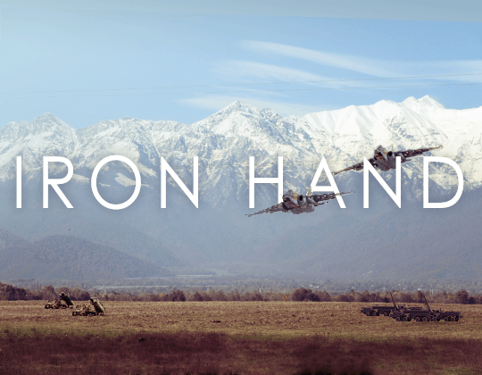

Original Concept By: Mike Mykytyn
Date: May 27th 2014
Location: Nagorno-Karabakh
Playable Side: Russia
Duration: 3 Days
The Nagorno-Karabakh enclave remains one of the most contested pieces of real estate in what was once the Soviet Union. The conflict started in 1988 and escalated when the enclave declared its independence from Azerbaijan in January 1992, based on the desire of the ethnic Armenian population to gain autonomy from greater Azerbaijan. Armenia naturally sided with their ethic brothers and contributed to a bloody conflict that ended with a Russian brokered ceasefire in 1994. Tensions since have continued to rise and fall driving a regional arms race, the occasional skirmish and putting Russia in a position where it once again may have to intervene.